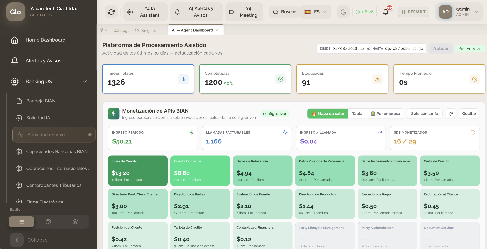

Estandarizamos los servicios de un banco sobre BIAN, el estándar global de arquitectura bancaria. Expón y monetiza APIs sobre tu core actual —sin reemplazarlo— y lanza nuevos productos por configuración, no por código.
Solicitar una demo
Monetización de APIs BIAN, en vivo. Ingreso por Service Domain sobre invocaciones reales, con tarifa config-driven — mapa de calor, desglose por empresa y por llamada. Cada API estándar puede generar ingresos.
Capacidades
Lo que hace Y4 distinto: estándar global, cero invención y adopción sin fricción.
Modelamos los dominios de servicio de un banco según BIAN. Nombres y contratos oficiales, cero invención.
Nuevos productos, reglas y flujos por configuración, no por código. Time-to-market en días, no meses.
Expón APIs bancarias estándar (BIAN) y abre nuevas líneas de ingreso: open banking, partners y embedded finance.
Patrón strangler: Y4 convive con tu core actual, sin reemplazarlo, con impacto interno mínimo.
Diseñado para grupos bancarios regionales: una misma arquitectura, varias entidades y países.
Event Sourcing y CQRS: cada operación es trazable, auditable y reconstruible. Cumplimiento sin fricción.
Cómo funciona
Y4 se acopla a tu core actual mediante un perfil de integración configurable. Sin migraciones forzadas.
Publicas capacidades bancarias estándar por configuración. Auditadas, versionadas y listas para partners.
Nuevos productos y canales (COMEX, factoring, banca por video) sobre la misma base, generando valor.
Te mostramos Y4 funcionando y cómo se adapta a tu core, sin reemplazarlo.
Hablemos